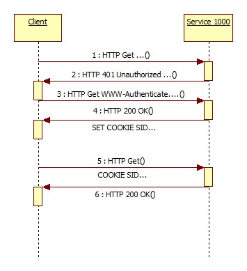

SData

|
Sommaire |
Introduction
SData est un protocole de communication promu par Sage pour facilité l'interopérabilité entre les produits Sage.
SData est basé sur le protocole HTTP et repose sur les principes de l'architecture RESTFUL.
URL ligne 1000 SData
L'url d'un Service SData 1000 est :
http://www.example.com/service/server/sdata/l1000/contract/dossier/entity?parameters
| section | usage |
|---|---|
http://www.example.com/service/server |
Racine de l'url du service ligne 1000 |
| sdata | Point d'accès SData |
| l1000 | Identification du produit |
| contract | Contrat SData |
| dossier | Dataset SData |
| entity | Entité |
| parameters | Paramètres de la requête. |
URL simplifiée
Lorsque le service HTTP embarqué est utilisé, un format d'URL simplifié peut être utilisé.
- /service/server/sdata/l1000 peut être remplacé par /sdata/
- L'indication du dataset n'est pas nécessaire
// GET/POST Connexion
https://myhost:myport/sdata/$connect?username=syfre
//////////////////
// CRUD operations
//////////////////
// GET entity
https://myhost:myport/sdata/mypackage/myclass('myKey')
// GET query all entities of a class
https://myhost:myport/sdata/mypackage/myclass
// GET query entities of a class
https://myhost:myport/sdata/mypackage/myclass?where=expression&orderBy=orderBy
// POST create entity
https://myhost:myport/sdata/mypackage/myclass
{
payload : entity properties
}
// PUT update entity
https://myhost:myport/sdata/mypackage/myclass('mykey')
{
payload : entity properties to update
}
// DELETE delete entity
https://myhost:myport/sdata/mypackage/myclass('mykey')
////////////////////////////
// Execute method operations
////////////////////////////
// POST on a service method
https://myhost:myport/sdata/mypackage/mymethod
https://myhost:myport/sdata/mypackage/$service/mymethod
https://myhost:myport/sdata/mypackage/myserviceclass/$service/method
// GET an entity property
https://myhost:myport/sdata/mypackage/myclass('mykey')/myproperty
// POST on an entity method
https://myhost:myport/sdata/mypackage/myclass('mykey')/mymethod
{
payload : method's parameters
}
// POST on an entity class method
https://myhost:myport/sdata/mypackage/myclass/myclassmethod
{
payload : method's parameters
}
// POST on a not persistent entity method
https://myhost:myport/sdata/mypackage/mynotpersistentclass/mymethod
{
payload : method's parameters
}
https://myhost:myport/sdata/mypackage/myentity('mykey')/$service/mymethod
//////////////////
// Batch operation
//////////////////
https://myhost:myport/sdata/$batch
{
"$resources":[
{ operation },
{ operation },
]
}
Type de contenu
Le type de contenu retourné par le serveur peut être contrôlé par :
1. la valeur du champ d'entête Accept de l'entête de la requête :
| Accept | Contenu de la réponse |
|---|---|
| application/xml | Flux xml atome |
| application/json | Format json |
| */* | Format json |
2. la valeur du champ d'entête ContentType
| ContentType | Contenu de la réponse |
|---|---|
| application/json | Format json |
3. la valeur d'un paramètre "type" de la requête
| Paramètre "type" | Contenu de la réponse |
|---|---|
| application/json | Format json |
| Tip : L'implémentation json est différente de l'implémentation xml, des différences de comportement peuvent être constatées. |
Authentification
SData est basé sur le protocole HTTP et le mécanisme d'authentification mis en oeuvre est celui de HTTP.
Le comportement du Service 1000 est celui-ci :

- Lors de la première connexion si la requête HTTP ne contient pas d'information d'authentification le service répond 401.
- Le client ré-exécute la requête en ajoutant les informations d'authentification dans WWW-Authenticate de l'entête HTTP
- Le serveur authentifie le Client et crée une session.
- Le serveur répond OK et retourne un cookie contenant l'identifiant de session.
- Par la suite le client passe le cookie de session dans les requêtes HTTP.
Les modes d'authentification supportés sont :
- Basic
- NTLM
Utilisation d'un cookie de session
En lieu et place de l'utilisation de l'authentification HTML, vous pouvez utiliser le service de session pour créer une session.
Transmettez ensuite le cookie de session dans les requêtes SDATA.
Par exemple :
// connection
// This query returns a cookie on the domain /sdata/
1. GET https://myhost/sdata/$connect?username=syfre
OK
// Execute the service method mymethod of the package mypackage.
// Transmit the previous session ccokie.
2. POST https://myhost/sdata/mypackage/mymethod
contenttype:application/json
accept:application/json
{"param":"myparam"}
OK
{"result":"mymethod result"}
| Tip : Attention à bien utiliser le même format d'URL pour la création de la session et pour les requêtes suivantes; le service positionne le domaine du cookie de session sur la racine de l'url de la requête.
Par exemple la séquence suivante ne fonctionne pas : // connection // This query returns a cookie on the domain /myservice/ 1. GET https://myhost/myservice/server/sdata/$connect?username=syfre OK // Execute the service method mymethod of the package mypackage. // Transmit the previous session ccokie.!! BAD COOKIE DOMAIN !! 2. POST https://myhost/sdata/mypackage/mymethod Unauthorized |
Client SData
Un stéréotype Classe entité de service distant a été ajouté pour implémenter un client SData.
Une classe fournisseur de service SData distant permet d'encapsuler les appels SData.
Contrats et Registry SData
Les Services SData sont organisés en Contrat qui décrivent les ressources exposées par les Services.
Pratiquement un Contrat SData est un schéma XML.
Les Contrats supportés par un Service SData sont exposés par une "Registry".
Un Service 1000 implémente une Registry SData qui expose les Contrats supportés par le Service.
Les entrées de la Registry sont définis dans le fichier de configuration du Service :
[\SOFTWARE\Sage\Ligne 1000\Administration\Servers\SYFRE\SData\1] DataSetName=iphone Title=syfre iphone Contract=ndfContract Version=1 Folder=Test iPhone Database=dbTestIPhone Society=
Ces entrées établissent la relation entre la section Dataset de l'URL SData et la configuration des Dossiers 1000 :
Par exemple dans cet url :
http://www.example.com/service/server/sdata/l1000/ndfContract/iphone/expenses
iphone fait référence au dataset "iphone" dont l'entrée dans la Registry est configuré sur le Dossier "Test iPhone"
| Tip : Il n'est pas obligatoire de gérer la registry SData, les paquets de l'application constituent des contrats qui sont directement accessibles sans passer par la registry |
Configuration spécifique
IIS
L'utilisation de SData avec un serveur HTTP IIS nécessite la mise en place d'un filtre ISAPI pour permettre de gérer correctement les URL SData.
Apache
La mise en oeuvre du module ReWrite est nécessaire pour véhiculer les informations d'authentification jusqu'au service :
<Directory "d:\Source\L1000Server\L1000Site">
Options Indexes FollowSymLinks Includes
AllowOverride All
Allow from all
RewriteEngine on
RewriteBase /
RewriteRule .* - [E=HTTP_AUTHORIZATION:%{HTTP:Authorization},L]
</Directory>
Ces configurations sont normalement réalisées par les outils d'administration.
| Tip : Il est conseillé d'utiliser le service http embarqué dans le serveur FRP 1000 |
Développement et mise au point
Il est possible d'utiliser le serveur de développement de client Desktop pour tester et mettre au point une interface utilisant les APIs SData
| Tip : Le serveur de développement s'exécute sur la session de l'utilisateur connecté, il est automatiquement identifié |
Voir aussi :
| Whos here now: Members 0 Guests 1 Bots & Crawlers 2 |